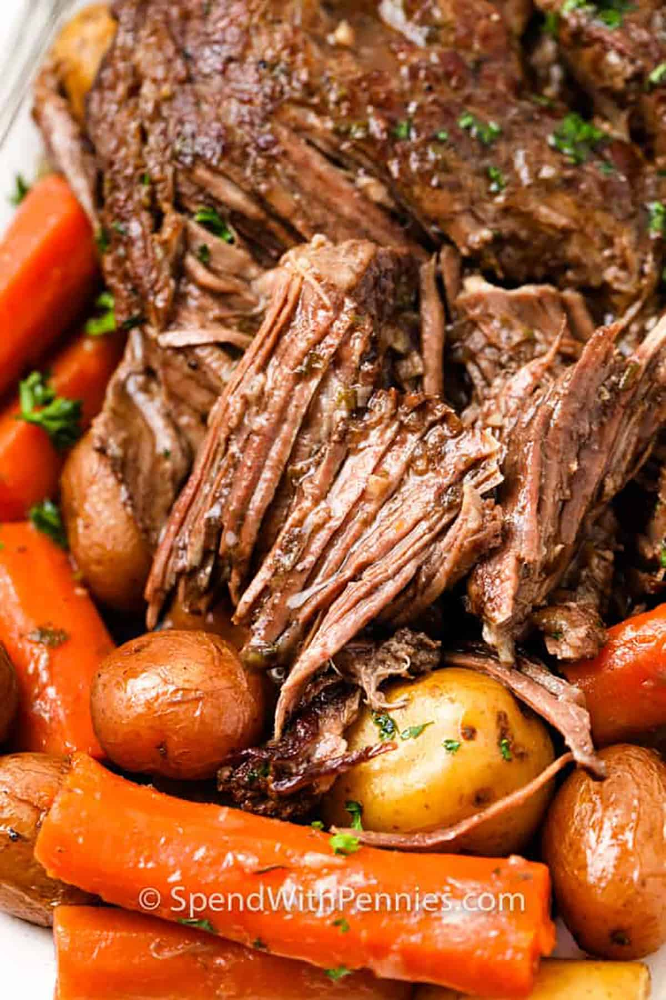

Kurt's Pot Roast

Description
A delicious pot roast containing beef, carrots, potatoes, celery, and KFC gravy. Invented by Kurtsley for hunting season 2022.
Ingredients
- Large chuck roast
- 2 Onions
- 4 Potatoes
- 1 Box of mushrooms, chopped
- 1 KFC gravy
- Baby Carrots, 1 bag
- 1 Tbsp vegetable oil
- 1 Tbsp Worcestershire sauce
- Dash of red wine
- 1 Tbsp garlic
- 1 Tbsp butter
- 1 tsp thyme
- 1 tsp rosemary
- 1 tsp parsley
- 1 tsp salt
- 1 tsp pepper
- 1 Tbsp flour
Preparation
- Brown roast on all sides, remove from pot
- Brown onions and mushrooms in pot, adding garlic at the end
- Add all ingredients and meat to the pot making sure to place the potatoes on the bottom
- Let cook in crock pot 6 hours on high or 8 hours on low
- Enjoy when the meat easily comes apart with a fork